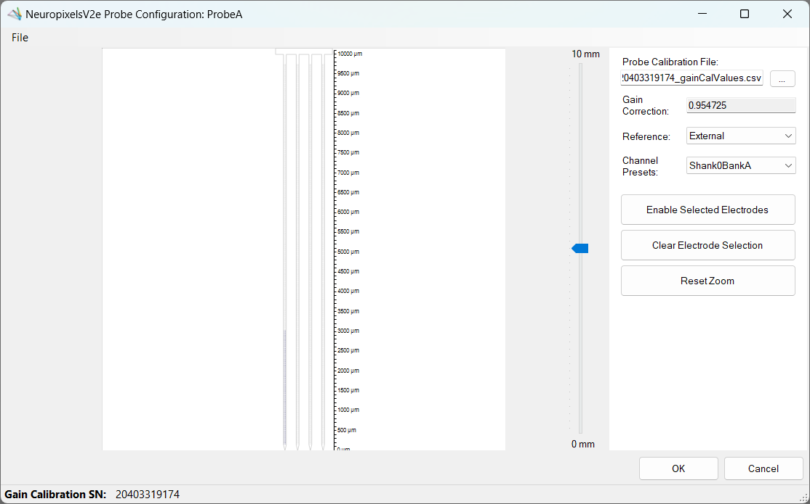

NeuropixelsV2e GUI
Note
The Neuropixels V2e Beta Headstage GUI functions identically to the Neuropixels V2e Headstage.
The NeuropixelsV2e headstage has a graphical user interface when the OpenEphys.Onix1.Design package is downloaded. For more information on how to install that library, check out the Installation page.
Overview
For NeuropixelsV2eHeadstage, the GUI allows for an easy way to change settings and visualize the effect. From the GUI, you can:
- Configure
Probe AandProbe Bindependently- Choose the probe calibration file
- Change the reference for all electrodes
- Choose pre-defined channel presets or manually define within a constrained set of possible combinations
- Easily visualize which electrodes are enabled
- Enable and disable the Bno055 stream
There are two ways to access configuration dialogs; 1) at the individual NeuropixelsV2eProbeConfiguration level where either Probe A or Probe B can be modified by itself, and 2) at the headstage level where both probes can be modified, as well as the NeuropixelsV2eBno055 device.
Whether the GUI is opened at the probe configuration level, or the headstage level, the usage will be almost identical. There are some additional tabs present at the headstage level, but the Probe A and Probe B tabs will act exactly the same as opening a probe configuration GUI for that specific probe.
Channel constraints
For NeuropixelsV2e, there will always be 384 channels enabled across the entire probe. Therefore, when enabling electrodes (either manually or using channel presets), some previously enabled electrodes will be disabled. Additionally, if more than 384 electrodes are manually selected to be enabled, only the last 384 channels will end up being enabled. It is therefore recommended to always double-check that the correct electrodes are enabled.
As an example, let us assume that electrodes 0 through 383 are initially enabled (this corresponds to 384 channels). Then, electrodes 384 and 385 are enabled. When these electrodes are enabled, electrodes 0 and 1 will be disabled. In this way, there will always be 384 channels enabled.
In addition to the absolute number of channels, there are other restrictions in place regarding which combinations of electrodes can be enabled at any given time. Specifically, in the NeuropixelsV2QuadShankElectrode there is a Channel property which defines the channel index of an electrode. Across the entire probe, no two electrodes that share the same Channel can be simultaneously enabled.
Channel presets take this into account automatically and ensure that the rules are followed. When manually enabling electrodes, the indexing logic is applied in the order that electrodes are selected. If two (or more) electrodes are selected that share a Channel value, the highest indexed electrode is the only one that will be enabled.
Note
Due to these constraints, it is possible that a desired combination of electrodes is not feasible.
Keeping or discarding configuration settings
While the GUI is open, any changes to the configuration settings can be freely modified and will not affect the configuration unless Okay is pressed. This includes all aspects of the configuration, such as which electrodes are enabled, the chosen reference channel, and the probe calibration file.
Note
The hardware is not actually configured until the workflow starts.
If the window is closed any other way (such as by pressing Cancel, or pressing the X to close the window), then any changes made will not be saved.
ProbeInterface
The NeuropixelsV2eHeadstage GUI uses ProbeInterface as the format to draw the probes and electrodes visually. For more information on ProbeInterface and the resulting JSON file, check out their format specifications page.
When opening the GUI, there is a default probe configuration that is loaded and drawn, which can be saved to a JSON file. Conversely, an existing JSON file can be loaded to update the current channel configuration. If for any reason the default configuration is needed, it can be loaded again at any time.
Open Probe Configuration GUI

Steps to open the Probe Configuration GUI:
- Select the
ConfigureNeuropixelsV2eHeadstagenode. - Click on the
NeuropixelsV2eProbeConfigurationto edit (eitherProbeConfigurationAorProbeConfigurationB). - Select the ... button on the right-most part of the property pane (#1 above).
Once opened, if no probe calibration file has been selected the window should look like the image below. To view the probe, follow the steps below.

Tip
The controls shown for this GUI are the same as the ones shown for the NeuropixelsV2e Headstage Configuration below.
Choosing a probe calibration file
Upon opening the GUI for the first time, if no probe calibration file was set in the Bonsai editor, the window will be mostly blank. To populate the window with a drawing of the probe, click on the ellipsis button to the right of the empty text box under "Probe Calibration File:" (see below). This will open a file dialog, where the calibration file can be searched for and selected.
Note
Files are expected to be named XXXXXXXXXXX_gainCalValues.csv, where "XXXXXXXXXXX" is the probe serial number.
Once the file is selected, press Open or Enter. This will populate the text box with the filepath to the calibration file and enable visualization of the electrodes. Below is a view of the Probe Configuration GUI that has been opened for Probe A with a gain calibration file selected. Note that the Gain Correction textbox and the Gain Calibration SN: status strip are automatically filled in with values found in the calibration file.

Selecting channel reference
Underneath the probe calibration filepath, there is a dropdown menu for choosing the reference for all channels. For possible values and a brief description of what they correspond to, check out the references page.
Channel presets
To save time, it is possible to select a preset channel combination from the Channel Presets dropdown. These presets are defined to work within the constraints of NeuropixelsV2e channel combinations defined above.
Channel presets follow one of these patterns:
- Shank N Bank [A | B | C | D]
- Enables all electrodes in the chosen bank on shank N
- To learn more about the banks along each shank, check out the NeuropixelsV2QuadShankBank page.
- All Shanks N_M
- Enables all electrodes starting at shank index N up to shank index M across all four shanks
If electrodes are manually enabled, the Channel Presets dropdown will change to None, indicating that a channel preset is no longer selected.
Maneuvering along the probe
Once a GUI has been opened and a probe calibration file has been selected, the main panel on the left will be populated with a NeuropixelsV2e probe. Below are the buttons used to navigate within this panel to view and choose electrodes.
- Mouse Controls
- Mouse wheel zooms in/out towards the cursor
- Left-click and drag will select electrodes within the drawn rectangle
- Left-click on an electrode will select that electrode
- Left-click in empty space will clear the selected electrodes
- Middle-click and drag will pan the electrodes
- Scroll bar
- On the right side of the main panel there is a scroll bar that can be used to move the probe up and down
- Panning the probe up or down will update the scroll bar once the movement has completed
- The scroll bar can be moved by:
- Grabbing the marker using the mouse and dragging it up or down
- Placing the cursor either above or below the marker and clicking
- Using the mouse wheel to scroll up or down while the cursor is over the scroll bar
Zoom and pan limits
When zooming in and out, note that there are limits in both directions. The probe can only be zoomed out to the point that the entire probe is visible within the panel and no more. Similarly, while zooming in the probe will not zoom in past a certain point.
In addition to the absolute zoom limits, the panel will automatically shift the probe to ensure it is always in view. This is handled each time the probe is zoomed or panned.
To reset the view at any time, click on the Reset Zoom button to fully zoom out the panel.
Manually enabling electrodes
Electrodes can be selected at any zoom level, but it is often preferable to zoom in to read the electrode indices. Consider maximizing the screen to see those numbers more easily.
To select, as described above, either click-and-drag the cursor over the desired electrodes, or select individual electrodes by clicking on them one-by-one. Once the electrodes to enable are selected, click on the Enable Selected Electrodes button in the right panel. At this point the selected electrodes should turn blue, indicating that they are now enabled. It is important to note that when electrodes are enabled, a number of previously enabled electrodes will be disabled due to channel constraints. For more information, read the Channel constraints section above.
The short video below shows how to select, clear selection, enable selected electrodes, and translate using the scroll bar. Note that once electrodes are manually enabled, the Channel Presets drop-down changes from Shank0BankA to None. Then, once the selected electrodes match the preset, it is automatically changed back to Shank0BankA.
Loading and saving channel configurations
When the GUI is first opened and after a probe calibration file has been specified, the default ProbeInterface configuration is loaded and drawn in the main panel. In this case, the default configuration is for a quad-shank NeuropixelsV2e probe, with the Shank0BankA channel preset selected. To load a new configuration, load the default configuration, or save the current configuration, go to the File drop-down menu (see below) and choose the relevant option.
Save ProbeInterface file
To save a ProbeInterface JSON file fully describing the probe, including which electrodes are currently enabled, go to the File drop-down menu, and select Save Channel Configuration. This will open a file dialog window to save the new JSON file. Choose a folder location and a name for the file, then hit Save. This will export the current channel configuration. This is a useful way to save any manually enabled electrodes as a backup, or to easily switch between different configurations between recordings.
Load ProbeInterface file
To load a ProbeInterface JSON file, navigate to the File drop-down menu and select Load Channel Configuration. This will open a file dialog window; browse to the existing JSON file, select it and press Open to load the channel configuration. The new probe shape will be loaded and drawn, with the enabled electrodes highlighted as usual.
Note
When loading a new configuration, the total number of electrodes must match the existing configuration, and the number of enabled electrodes must match.
Load default configuration
To load the default channel configuration at any time, navigate to the File drop-down menu and choose Load Default Channel Configuration. This will load the default configuration, with the Shank0BankA channel preset selected.
Open Headstage Configuration GUI
Step to open the headstage configuration GUI
- Double-click the
ConfigureNeuropixelsV2eHeadstagenode (#2 above)
Once opened, if no probe calibration is selected for either Probe A or Probe B, then both tabs will only show their controls on the right and no probes (see below).

Configure Probe A
Using the headstage configuration GUI is exactly the same as using the probe configuration GUI. After the GUI has been opened and a probe calibration file has been selected, Probe A will be drawn in the corresponding tab (see below).

Configure Probe B
Using the headstage configuration GUI is exactly the same as using the probe configuration GUI. After the GUI has been opened and a probe calibration file has been selected, Probe B will be drawn in the corresponding tab (see below).
Configure Bno055
At the headstage level, there is another device tab listed for a Bno055. From this tab, the device can be enabled or disabled by selecting the appropriate value from the drop-down menu next to Enable. While the DeviceAddress and DeviceName values are modifiable here, they have no affect on the underlying device configuration; only changes to the Enable property will be respected.